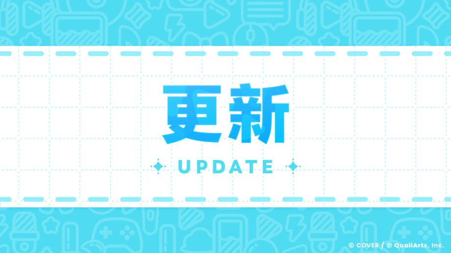
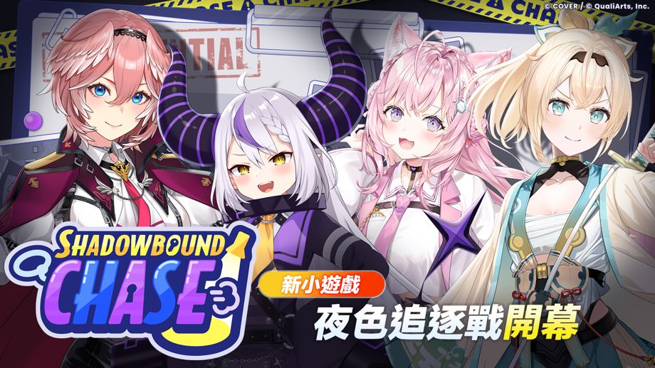

感謝各位玩家的熱烈支持。
我們是「hololive Dreams」營運團隊。
2026-08-28 11:00:00已完成Ver.1.1.0版本更新。
全新小遊戲「夜色追逐戰」開幕！

全新小遊戲「夜色追逐戰」開幕！
夜色追逐戰是分成逃跑的惡作劇組與負責追捕的巡邏小隊，互相對抗的小遊戲。
請依序點選［公告］→［一覽］→［全新小遊戲「夜色追逐戰」開幕！］查看詳情。
其他更新內容
◆改善各種道具的獲得量
根據各位玩家平時提供的意見與建議，我們重新調整了紅鑽石及各種培育素材等道具的獲得量。
- 2026-09-01 05:00:00起舉辦的任務通行證中，免費通行證將新增最多1000個紅鑽石。
- 為了讓成員更容易獲得培育素材，我們上調了可透過Live獲得的培育素材獎勵量。
-
- 增加訓練Pt、Holo金幣的獲得量
- 增加各種碎片的獲得量（抽取機率）
- 大幅增加各種水晶的獲得量（抽取機率）
- 在兌換Holo貼紙及兌換特殊holo貼紙中新增了Live能量。
- 已將兌換特殊holo貼紙中的Holo寶盒每月可兌換數量由5個調整為20個。
- 為了讓電玩巨蛋城硬幣更容易取得，2026-08-29 12:00:00舉辦的活動起，已調整為可在活動兌換所獲得電玩巨蛋城硬幣。
◆優化Live的多人遊玩模式
-
現於難易度設定畫面選定難易度後，仍可取消設定。
在限制時間內，且所有參加者選擇難易度並完成準備前，皆可取消。 - MODE選擇畫面的「包含AUTO」及難易度設定畫面的「AUTO」設定，現已改為會沿用上次設定的內容。
◆優化創作譜面
- 已可將自己製作的創作譜面，或其他玩家製作的心儀創作譜面資訊，以圖片形式收藏與分享。
- 已可從創作譜面製作者的頁面，前往該製作者的譜面一覽畫面。
- 已封鎖的玩家的創作譜面將不再顯示。
- 已可長按裝飾音符工具開啟調色盤。
- 優化警告與違規標記顯示，可更容易移動至對應位置。
- 現已可在設定縮圖前設定音符速度。
- 已可在縮圖設定畫面，刪除已拍攝的縮圖。
- 已可在體驗遊玩設定畫面，設定Live選項。
- 編輯器畫面寬度已可依螢幕尺寸自由調整。
- 強化異常譜面檢測。
- 製作創作譜面時，現已會顯示音訊頻譜（僅限Steam版）。
◆其他更新內容
- 在自選轉蛋的「選擇精選成員吧」中，篩選及排序設定現已會依各轉蛋分別儲存。
- 在Holowork中，活動結束時的通知現已不會在短時間內連續顯示。
- 放寬了極限跑道中第1名玩家抵達終點後至結束為止的限制時間。
-
已可於iOS裝置使用GameCenter進行連動。
更新至Ver1.1.0以上版本後，首次啟動應用程式時，將會顯示登入畫面。
◆異常修正
已修正以下異常。
- 在部分條件下，「多人Live」開始後可能會暫時出現運行變慢的情況。
- 在部分條件下，「多人Live」的歌曲選擇畫面可能會在倒數計時歸零前無法進行操作。
- 在小遊戲「極限跑道」中進行特定操作時，可能會在非預期的時間點判定抵達終點。
- 在小遊戲「極限跑道」中，可能會爬到關卡中非預期的位置。
- 在小遊戲「極限跑道」中，掉落後可能會回到非預期的位置。
- 在創作譜面中，若公開歌曲時應用程式強制關閉，可能會導致該歌曲無法公開。
- 部分玩家在Live或小遊戲結束時，會顯示「無效的參數」。
- 在部分條件下，領取成就時會顯示「無效的參數」。
- 在部分條件下，重Holo成員面板時會顯示「無效的參數」。
- 在部分條件下，Steam版標題畫面的滑鼠游標會消失，導致無法操作。
- 部分玩家開始遊戲時使用的holo成員，可能不是在遊戲開頭「先選擇要遊玩的holo成員吧」中所選的holo成員。
- 在部分條件下，於任務通行證購買等級時，會顯示高於實際消耗數量的數值。
- 在部分條件下，部分與樂曲解鎖相關的成就，即使尚未達成條件，進度仍會增加。
- 在Live的遊玩成績中，無論獲得分數為何皆可獲得的「夢幻Exp」，也會重複顯示為分數獎勵的一部分。
- 樂曲「Kyun Kyun MIKO Kyun kyun♡」的「EXPERT」難易度中，有一處音符的位置偏離了原本應配置的位置。
- 原本應在獲得成員後才會解鎖的對話語音，在獲得成員前也能播放。
- 修正其他輕微異常。